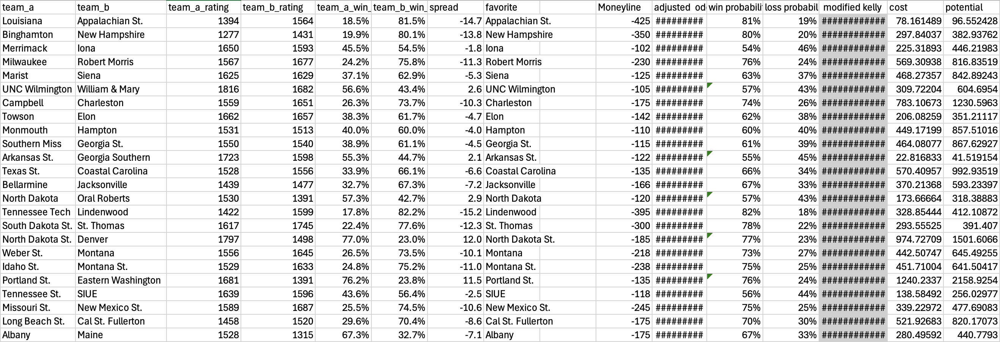

CRAIG: Bayesian Parameter Tuning for Predictive Elo Models
In December 2025, I began adapting my disc golf ratings algorithm for broader applications, ultimately focusing on NCAA D1 basketball. The system I eventually landed on uses Bayesian optimization to fine-tune a five to ten parameter model which is trained on 2 years of historical data. To maintain accuracy, the system is retrained at regular intervals, ensuring team ratings and parameters reflect current performace trends. In the time since initial deployment I automated the bet selection process and refined the underlying predictive logic.
Note on Transparency: While the source code, training data, and specific parameter weights remained proprietary during the 25-26 basketball season to protect the model's integrity, I now feel more comforable sharing that information.

Above: A sample of the system's moneyline selections for January 22, 2026.
During the month of January, I performed rigorous out-of-sample verification on a population of 1016 games. To test the model under high volume conditions, I focused on the 15 days with the highest game density. During this period, the system maintained a 70.2% hit rate, carving out a consistent edge over the -230 average implied hurdle (which requires a 69.7% win rate to break even).